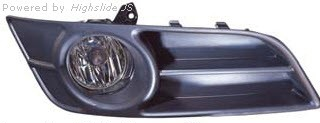
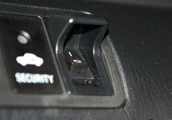
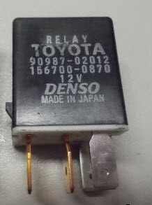
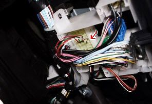
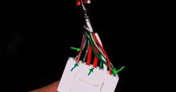

Комплект противотуманных фар Тойота Королла от Depo стоит ~3000 рублей.

Штатный переключатель ПТФ на Короллу стоит дорого, да и бывает его нет в наличии в магазинах, поэтому устанавливаем обычную кнопку стоимость которой 10-20 рублей

Реле TOYOTA 9098702012
(Полное название - Реле 4-х контактное многофункциональное (ПТФ) Тойота 9098702012)

Убираем заглушки ПТФ, Устанавливаем противотуманные фары, Установка занимает не больше 10 минут, Заглушки на защелках, а при установке ПТФ на Короллу потребуется пару саморезов
Реле противотуманных фар надо установить в колодку, которая находится над бардачком, перед салонным фильтром. Снизу эта коробка с проводами и колодкой закрыта пластмассовой крышкой, которую нужно снять, хоть она и не мешает установке. Если это не сделать, не будет видно, куда нужно устанавливать реле.
Стрелкой показана колодка, в которую сверху нужно вставить реле. Там три колодки, нам будет нужна средняя.

Для подключения выключателя противотуманных фар , снимаем нижнюю часть обшивки рулевой колонки Тойота Королла, которая крепится на винте снизу и на двух саморезах с торца, со стороны руля.

Чтобы противотуманные фары Тойота Королла просто включались и выключались, независимо от габаритов и ближнего света, то соединяем провода согласно двум стрелкам, направленным снизу вверх.
Чтобы противотуманные фары Тойота Королла включались только при включенных габаритах или ближнем свете, то провода от выключателя присоединяем к красному с голубой полосой проводу и к зелёному проводу (на фото – зелеными стрелками)
Итог: